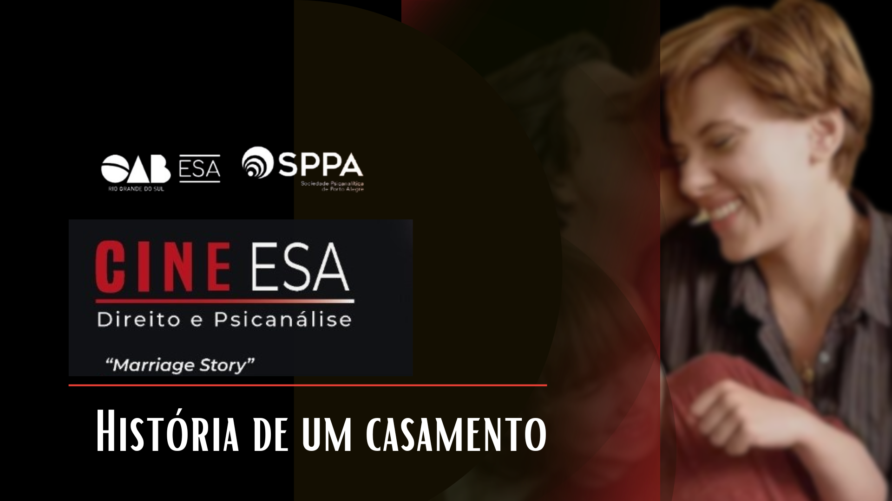

História de um Casamento - Refletindo sobre vínculos do casal
- 
 Não podemos viver sem vínculos, embora alguns deles, por excesso ou falta, nos acorrentem, nos impeçam de viver, de amar, de conhecer, enfim, de levar uma vida plena e livre
Não podemos viver sem vínculos, embora alguns deles, por excesso ou falta, nos acorrentem, nos impeçam de viver, de amar, de conhecer, enfim, de levar uma vida plena e livre
“Um filme que nos mostra as dificuldades de integrar a vida profissional, as metas, desejos, desafios e progressos com os sonhos da vida familiar”. Essa é uma das definições encontradas pela coordenadora do Comitê da Família e Casal, Carmem Keidann, para “História de um casamento”, escolhido pelo projeto “Cine ESA/SPPA- Direito e Psicanálise”, que foi debatido em 05 de outubro de 2022. A atividade, coordenada pela Diretoria de Divulgação e Assuntos da Comunidade, busca abordar e examinar obras cinematográficas através do olhar psicanalítico e jurídico.
O filme apresenta um casal de jovens profissionais, talentosos, em áreas afins e trabalhando juntos. Instalam-se em Nova Iorque, onde Charles tem oportunidades de direção teatral, e Nicole atua no elenco. Ela tem a expectativa de voltar a residir ou pelo menos a viver um tempo em Los Angeles; mas só consegue essa realização após a separação, depois de estabelecer um novo relacionamento amoroso e de iniciar uma nova experiência como diretora: um sonho de muitos anos atrás.
“Um aspecto observado é que, após a fase inicial de apaixonamento, idealizações e sonhos, segue-se um casamento rotineiro, com tarefas do dia-a-dia, e emergem queixas e ressentimentos que não são falados. Cada um contribui no vínculo do casal com sua configuração singular: qualidades, defeitos, personalidade, vivências infantis, cultura, etc...”, afirma Carmem Keidann, que foi a convidada, na oportunidade, para comentar a obra do ponto de vista psicanalítico. Ela destaca que nos relacionamentos de casal são comuns os mal entendidos. “O que é conversa e o que é acordo? O mesmo evento vivido e sentido de forma diversa por cada um é descrito no filme”, prossegue.
A rotina do casal é, então, interrompida quando surge uma traição. É possível aceitar este fato e seguirem juntos? “O filme mostra a busca por um mediador ou terapeuta que solicita que cada um escreva uma carta sobre o outro, para ser lida no primeiro encontro. Nicole se nega a ler o que escreveu e, por insistência do mediador e com a concordância de Charles, lembra o que haviam combinado. Sai revoltada acusando-os de estarem em conluio. Segue-se a procura do caminho judicial, apesar de haverem se comprometido verbalmente a se divorciarem de forma amigável”, descreve.
Vínculos - A coordenadora do Comitê da Família e Casal comenta que não podemos viver sem vínculos, embora alguns deles, por excesso ou falta, nos acorrentem, nos impeçam de viver, de amar, de conhecer, enfim, de levar uma vida plena e livre, destacando que o tema dos vínculos é relevante, “pois o outro nos antecede na construção da nossa subjetividade”.
Há uma cena em que trocas verbais agressivas entre o casal fazem com que Charles deslize em direção à destrutividade, desejando a morte da ex-companheira e, posteriormente, visivelmente arrependido e consternado, lhe peça perdão de joelhos. “Importante pontuar o quanto os aspectos agressivos, destrutivos, estão dentro de nós, convivendo com os amorosos, altruístas e construtivos”, destaca a psicanalista. Em momentos de intensa angústia, vínculos de amor e ódio, desejos de vida e morte, se enlaçam e se exacerbam, provocando, muitas vezes, comportamentos destrutivos em direção ao objeto amado.
Filho – Carmem observa que, no filme, o casal consegue realizar um movimento de proteção em relação ao filho, Henry, tentando atenuar o sofrimento da separação. “Denotam capacidade de diferenciar as raivas entre eles e mantêm uma harmonia com a criança”, avalia, lembrando que sugerem, assim, serem suficientemente maduros para a parentalidade, mesmo com percalços e regressões.
Lisandra Salles, integrante do Comitê da Família e Casal/SPPA, afirma que o filme mostra as dificuldades de integrar a vida profissional, as metas, desejos, desafios e progressos com os sonhos da vida familiar. “Nesse sentido, traz um alerta para a vida contemporânea, o que nos propicia mais questões e inquietações. Dúvidas mais do que certezas nos acompanham”, salienta. Segundo a psicanalista, “reconhecer as dificuldades e buscar ajuda não garante salvar um casamento, mas possibilita compreender o que estão vivendo nesse conflito e então tomar atitudes de forma reflexiva e com a tranquilidade possível. E contamos na atualidade com a abordagem psicanalítica de casais e famílias como uma opção terapêutica além dos atendimentos individuais”, finaliza Lisandra.